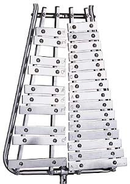

| 
| Lyra Glockenspiel
The glockenspiel makes use of the free bar modes .They are not a harmonic sequence, but the fundamental mode produces a clear, bell-like tone.
Sometimes called "orchestra bells", the glockenspiel has rectangular bars 1 in to 1 1/4 in wide and 5/16 to 3/8 thick. A typical range is G5 (784 Hz) to C8 (4186 Hz), matching the top end of the piano. When played with brass or plastic mallets, a sharp attack is produced followed by a clear, ringing sound at the designed pitch. The upper bar modes, which are not harmonics of the fundamental pitch, die away quickly.
|